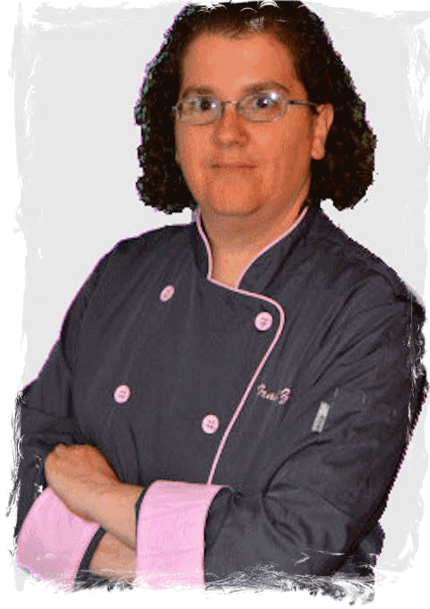

My Family Life

Traci is a trained, professional chef, providing personal chef and catering services to clients of all
sizes and needs.
She loves to feed her family great food (as evidenced by her husband's not insubstantial midsection) and they serve as frequent guinea pigs for her culinary creations.
Traci is also a crafts person, using her talents to create a wide variety of unique creations for any occasion.
She loves to feed her family great food (as evidenced by her husband's not insubstantial midsection) and they serve as frequent guinea pigs for her culinary creations.
Traci is also a crafts person, using her talents to create a wide variety of unique creations for any occasion.

Andrew is a prodigious multi-instrumental musician whose band, Catharsis Theory, has been writing and
playing together for several years.
He is also a lover of video games, having bested his dad in a Guitar Hero tournament as a child, and beating every version of Halo on the nearly-impossible-to-beat Legendary difficulty level.
Andrew is currently in school working towards his Computer Science degree.
He is also a lover of video games, having bested his dad in a Guitar Hero tournament as a child, and beating every version of Halo on the nearly-impossible-to-beat Legendary difficulty level.
Andrew is currently in school working towards his Computer Science degree.
Ashley is a Broadway-bound, permanent fixture on the local theater scene across Pennsylvania, frequently
appearing and starring in various musicals.
She is also a part-time employee of the S.A.L.T. Performing Arts center where she fulfills numerous roles outside of performing as she transitions into the world of show production.
Ashley is an expert Mindcrafter, a creator (and destroyer, 'cause that's how it goes!) of virtual worlds.
She is also a part-time employee of the S.A.L.T. Performing Arts center where she fulfills numerous roles outside of performing as she transitions into the world of show production.
Ashley is an expert Mindcrafter, a creator (and destroyer, 'cause that's how it goes!) of virtual worlds.